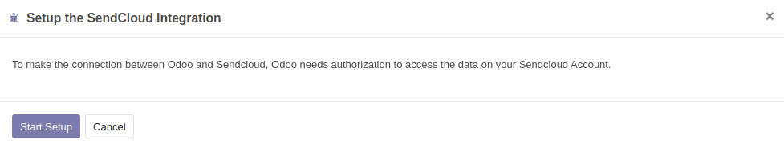

SendCloud Shipping
This module is part of the SendCloud official connector for Odoo.
At the moment, the SendCloud official connector for Odoo consists of two modules: delivery_sendcloud_official and website_sendcloud_official.
- delivery_sendcloud_official. This module works for the backend.
- website_sendcloud_official. This module is for the frontend (webshop) and it depends on delivery_sendcloud_official.
This module mostly implements what’s described in https://docs.sendcloud.sc/api/v2/shipping/
Full documentation for developers is in https://docs.sendcloud.sc/.
This module works for the Community Edition as well as the Enterprise Edition.
Table of contents
Installation
In the Odoo configuration file add delivery_sendcloud_official in the list server_wide_modules:
[options] (...) server_wide_modules = web,delivery_sendcloud_official (...)
A restart of the Odoo server is required afterwards.
Configuration
Create an account on sendcloud.com and choose a plan.
Go to integrations and select Odoo integration to use the Odoo integration or select api integration if you only want to use the api integration (see readme for more information).
Odoo Integration
Go to SendCloud > Configuration > Wizards > Setup the SendCloud Integration. Click on Setup Integration. A wizard will pop up.
Select Odoo Integration. Start Setup. You will be redirected to a SendCloud page asking you to authorize OdooShop to access your Sendcloud account. Click on Connect in the SendCloud page.

Go back to the Odoo Integration configuration. An integration “OdooShop” is now present in the Integration list view. Open the OdooShop Integration form. Edit the OdooShop Integration. The changes you make will be in sync, SendCloud side, with the integration configuration.

In case multiple integrations are present, sort the integrations by sequence, to allow Odoo to choose the default one that will be used.
Please note that when using the Odoo integration an "incoming order" is created in Sendcloud as soon as you validate the salesorder. The “incoming order” has status “in process” in Sendcloud and is not forwarded to the carrier yet.

When you validate the delivery in Odoo the label is created and the pick-up assignment is send to the carrier.

In previous version there was a possibility to connect to the API integration instead of the Odoo integration. To benefit from Sendcloud support we highly recommend you to upgrade to the latest version of this module with the Odoo integration.
SendCloud panel settings
When you configure the Integration settings in the online SendCloud panel (https://panel.sendcloud.sc/) those settings are also sync-ed with the Integration settings Odoo side.
Synchronize SendCloud objects
After the setup of the integration with SendCloud server is completed, second step is to synchronize the objects present in SendCloud server to Odoo. To synchronize SendCloud objects for the first time:
Go to SendCloud > Configuration > Wizards >Sync the SendCloud Objects. A wizard will pop up.

Select all the objects. Confirm. This will retrieve the required data from SendCloud server.

Some SendCloud objects will be automatically synchronized from the SendCloud server to Odoo. Those SendCloud objects are:
- Parcel Statuses
- Invoices
- Shipping Methods
- Sender Addresses
To configure how often those objects should be retrieved from the SendCloud server:
Go to Settings > Technical > Automation > Scheduled Actions. Search Scheduled Actions for “SendCloud”.

Set the “Execute Every” value according to your needs.
Sender Addresses and Warehouses
In case of multiple warehouses configured in Odoo (eg.: user belongs to group “Manage multiple Warehouse”):
Go to SendCloud > Configuration > Integration. Click on Configure Warehouse Addresses. A wizard will pop up. Set the corresponding Sendcloud Sender Address for each of the warehouse addresses.

Alternatively, in Inventory > Configuration > Warehouses, select an address. In the address form, go to Sales and Purchase tab and set the Sencloud Sender Address. In Sale Order > Delivery: select the Warehouse. Check that the address of the Warehouse has a Sendcloud Senser Address.

Test Mode
Enabling the Test Mode allows you to access extra functionalities that are useful to test the connector.
To enable the Test Mode, go to the “General Settings”: under the SendCloud section you can find the “Enable Test Mode” flag.
There is no seperate test environment available on the Sendcloud portal. This means that as soon as you create labels the carries is given the order to pickup the goods. You can use carrier "unstamped letter" for testing. When testing with other carriers make sure that you cancel the labels in the Sendcloud portal within a couple of hours otherwise the label will be billed and picked up.
Since there is no test environment it's very important to know that Sendcloud stores it records based on the delivery number, for instance WH/OUT/0001, this field is idempotent. So when you start testing and you will use delivery number WH/OUT/00001 this number is stored in Sendcloud. When you go live and use the same delivery numbers, in this case WH/OUT/00001, Sendcloud will treat this as an update of the existing record and will send back the shipping-address that was already stored (created while testing). To avoid this problem you should set a different prefix on the sequence out in your testenvironment. In debug mode, Technical/Sequences Identifiers/Sequences, select the sequence out and adjust this to WH/OUT/TEST for instance.

Quickstart
In short this is how the module works:
- the user creates a sale order in Odoo; the user clicks on “Add shipping” button and selects one of the shipping methods provided by SendCloud
- when confirming the sale order, a delivery document is generated (stock.picking)
- when confirming the picking, a parcel (or multiple parcels) for the specific sales order are created in Sendcloud under Shipping > Created labels
- the picking is updated with the information from Sendcloud (tracking number, tracking url, label etc…)
Map of Sendcloud-Odoo data models
| SendCloud | Odoo |
|---|---|
| Integration | |
| Brand | Website Shop |
| Order | Sales Order |
| Shipment | Picking |
| Parcel (colli) | Picking packs |
| Sender address | Warehouse address |
| Shipping Method | Shipping Method |
Multicollo parcels
In Inventory > Configuration > Delivery Packages, set the carrier to Sendcloud. In the out picking, put the products in different Sendcloud packages to create Multicollo parcels.
Service Point Picker
The module contains a widget, the Service Point Picker, that allows the selection of the service point. The widget is placed in the “SendCloud Shipping” tab of the picking. The widget is visible in case the following is true:
- the configuration in the SendCloud panel has the Service Point flag to True (in the SendCloud integration config)
- the Shipping Method selected in the picking is provided by Sendcloud
- the Shipping Method has field sendcloud_service_point_input == “required”
- all the criteria (from country, to country, weight) match with the current order
Cancel parcels
When canceling parcels a confirmation popup will ask for confirmation.
Troubleshooting
If the communication to the SendCloud server fails (eg.: while creating a parcel), the exchanged message is stored in a Log section, under Logging > Actions.
TODO
- Enable different Shipping Methods for different Websites